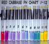
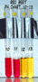

Natural pH-Indicatorsby RhodiumNow and then you need to measure the pH of a solution, and this can be done by either using a digital pH-meter, or you can use pH papers (blotter paper soaked in an indicator solution, such as litmus or BTB). Now, both those methods are more or less expensive, the cheapest pH-meter will cost $50 and most will go for over $100. pH paper is cheaper, but many people have trouble finding them. You really don't have to use either of them, as nature provides us with pH indicators in the form of plant pigments known as antocyanines, which change color over different pH ranges, depending on source. On this page, I will present the indicators derived from red cabbage and red beet. Red cabbage juice will function over a wide pH range, from as low as pH 1 up to pH 12. Red beet juice will change from red to yellow somewhere between pH 11 and 12. The indicator solutions are prepared by chopping up the red beets or red cabbage into small pieces, preferably by running them through a blender. Then the juice is strained off from the resulting mush, and the mush can also be extracted with water to yield even more of the pigment. The solutions are filtered to remove any remaining plant matter, and can then be used as is, or diluted if the color is too intense. I have no idea for how long such solutions will keep, but stored in a refrigerator they should last for at least several weeks. If your solutions are too dilute, you may be able to concentrate them with gentle heating, I don't know at what temp the pigments will be destroyed, so be careful. I made solutions of NaOH or HCl in water, to yield solutions with pH's of 0 through 13, and tested the juices, and the results can be viewed below. Outside the shown ranges, the indicators won't change color anymore. Click on the pictures to enlarge them.  Red Cabbage, pH 1-12  Red Beet, pH 10-13 |
{kind=link}
{kind=link}